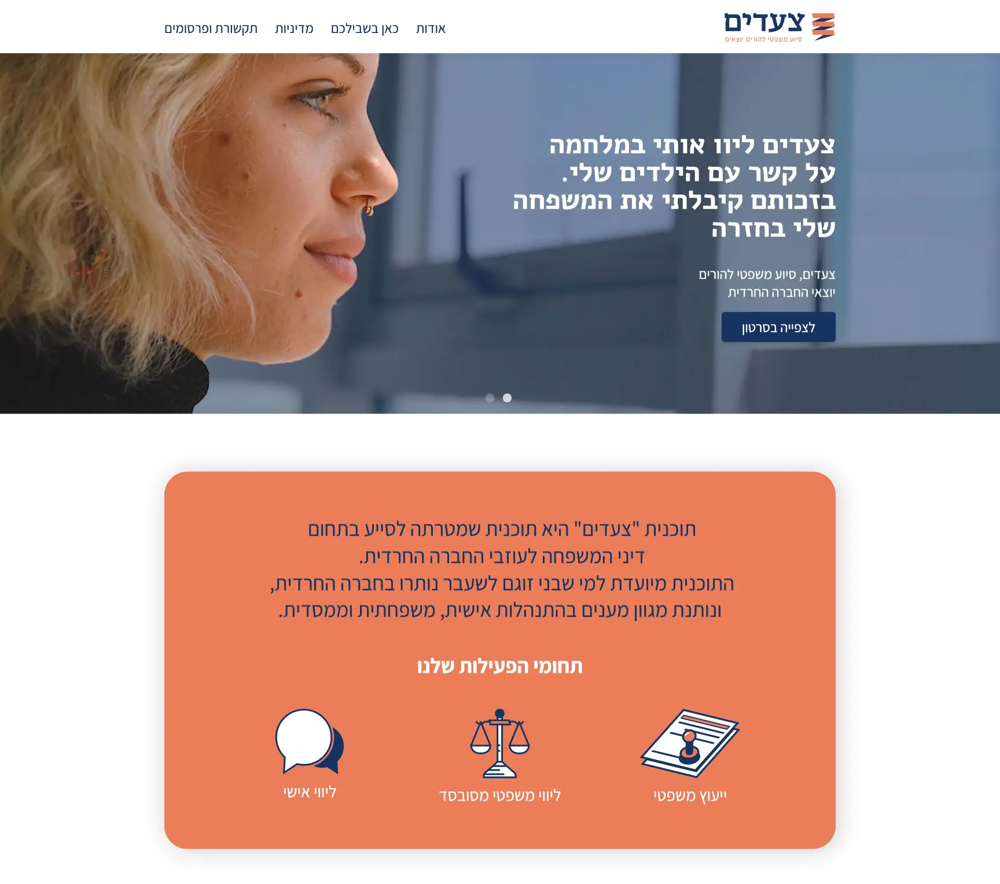

The website and branding were designed to support Hillel's mission of helping these individuals build meaningful, self-determined lives. Through this project, we sought to create a user-friendly website and visual identity that would help Hillel reach and connect with those in need of their services, and ultimately make a positive impact in the lives of ex-ultra-Orthodox individuals and their families.
"Steps (Tzeadim)" is a program that helps ex-ultra-Orthodox parents fight for custody of their children in legal proceedings that often favor the Orthodox side. As the website designer for this program, my aim was to create a platform that would serve as a valuable resource for these parents seeking custody. The program offers guidance and support through the legal process, with a focus on ensuring the best possible outcome for tcoulhe children caught in the middle of these custody battles.